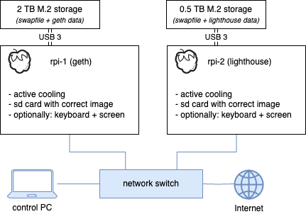
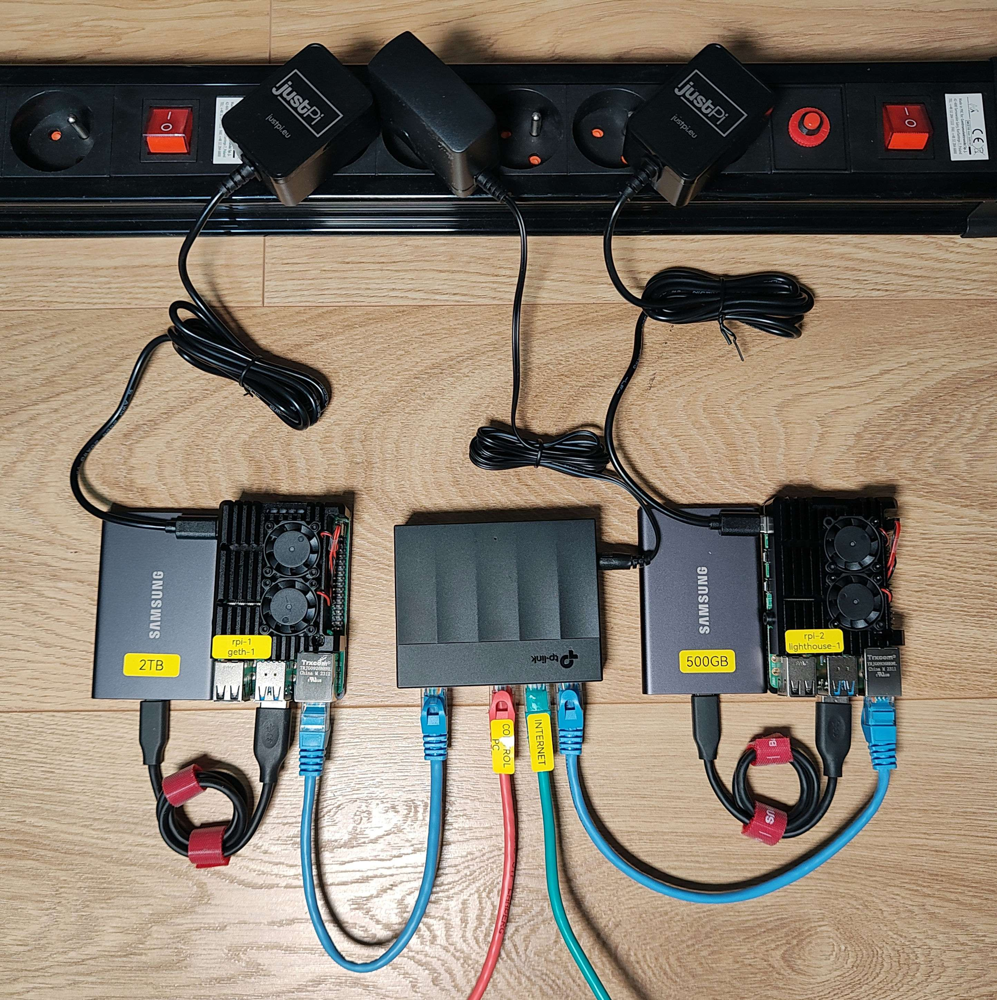
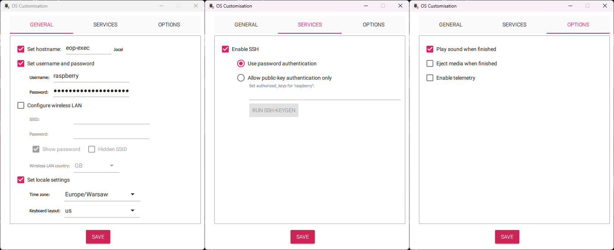
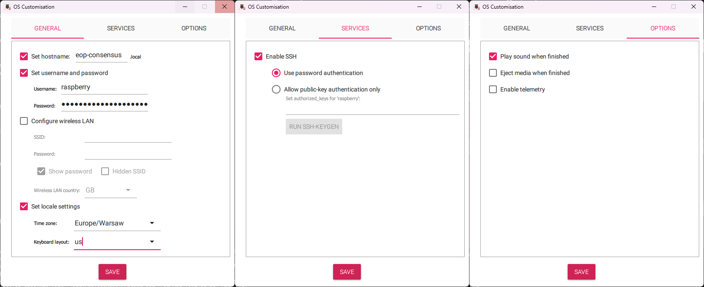

Dual-Devices Mode
The following section provides a step-by-step guide for configuring, deploying, and running a full Ethereum Node hosted on two Raspberry Pi devices
Suggested configurations:
- Two Rpi 5
- Two Rpi 4
- Rpi 5 + Rpi 4
or any other configuration including CM4.
A device with an execution client needs 2TB+ fast storage. A device with a consensus client needs 256GB+ fast storage.
⚠️ To avoid errors during the first setup, please follow the instructions precisely. ⚠️
Hardware Requirements
The default setup requires the following hardware components:
- 2 x Raspberry Pi (8GB) starter kits
- 2 x SSD (one for each device)
- 1 x SD Card reader/writer
- 2 x Fast microSD Card
Raspberry Pi
You can use:
- Raspberry Pi 5 with Active cooling
- Raspberry Pi 4 with Active cooling
- Raspberry Pi CM4 with Active cooling and with motherboard
8GB RAM is required.
Cooling
Active colling is required to avoid throttling and keep sufficient performance/stability on the system. Please see "Hardware" section for more information.
Storage
2 TB fast drive is required for device running execution client (Geth)
256 GB+ fast drive is required for device running consensus client (Nimbus/Lighthouse)
With Raspberry Pi 5 you have three options for storage:
- external USB SSD drive (wide availability)
- m.2 NVMe drive with NVMe HAT for Raspberry Pi 5 (max performance)
- m.2 NVMe drive with USB m.2 adapter
Raspberry Pi 5 has a PCIe x1 connector on board so with a special adapter m.2 NVMe drive can be used. This option gives the maximum possible performance. For more information visit: Recommended Hardware
With Raspberry Pi 4 you have two options for storage:
- external USB SSD drive (wide availability)
- m.2 NVMe drive with USB m.2 adapter
If you use USB always choose USB 3.0 ports (blue)
microSD Card
Flashing a microSD card takes time, but it can be reduced by using a fast device. Additionally, using a fast micro SD card results in a shorter booting time. A few examples:
More information
https://www.tomshardware.com/best-picks/raspberry-pi-microsd-cards.
Power Supply
As a power supply, we recommend an official 15W PSU for Raspberry Pi 4 or official 27W PSU for Raspberry Pi 5.
Hardware Connection
After gathering all the necessary hardware, unbox the Raspberry Pi devices and connect it as specified below:
Connection Diagram

⚠️ For the mDNS mechanism to work, it is crucial that all devices are connected within the same local network. ⚠️
Optimally using one network switch.
Photos
Below photos illustrate example setups

OS Images
The image contains a preconfigured Linux distribution capable of running an Ethereum Node.
Prerequisites
To write an image on an SD card, it is recommended to use the official tool provided by the Raspberry Pi Foundation:
After installing it on your PC, you can download the newest Web 3 Pi image.
You need two image files:
List of all images: Web 3 Pi images
Writing Images
Follow the instructions below to write images on a microSD card for both devices.
Execution client
- Insert a microSD card into a card reader and connect the reader to your PC (You may need microSD to SD adapter)
- Open the Raspberry Pi Imager on your PC
- Choose device type
- Choose the downloaded image for execution client as a source image
- Choose the SD card reader as a target device
- Perform any custom configuration steps that you need
- Set hostname to eop-exec
- Enable SSH authentication
- Set username and password (e.g., raspberry/raspberry) (Do not change username and password)
- Uncheck "Eject media when finished"
- Write the image to the SD card
- (optionally) Eject the card and insert it into the device
- Do not interrupt verify step
Remember the hostname
We use mDNS, allowing users to connect to Raspberry Pi with the hostname instead of the IP address after proper installation.
An example screenshot with settings for the geth node: 
Important note
After installation, the SSH username will be ethereum, and the password will also be ethereum. All other users will be disabled.
Consensus Client
- Insert a microSD card into a card reader and connect the reader to your PC (You may need microSD to SD adapter)
- Open the Raspberry Pi Imager on your PC
- Choose device type
- Choose the downloaded image for execution client as a source image
- Choose the SD card reader as a target device
- Perform any custom configuration steps that you need
- Set hostname to eop-consensus
- Enable SSH authentication
- Set username and password (e.g., raspberry/raspberry) (Do not change username and password)
- Uncheck "Eject media when finished"
- Write the image to the SD card
- (optionally) Eject the card and insert it into the device
- Do not interrupt verify step
Remember the hostname
We use mDNS, allowing users to connect to Raspberry Pi with the hostname instead of the IP address after proper installation.

Important note
After installation, the SSH username will be ethereum, and the password will also be ethereum. All other users will be disabled.
If some steps remain unclear, you can visit the Raspberry Pi "getting started" page for more information on Imager settings and usage.
Initial configuration
Web3 Pi image uses classic /boot/firmware/config.txt as config file. This allows you to customize your setup before the first run. After writing the image to the SD card you should see a new drive in your PC. There is a config.txt file. This config is for Raspberry Pi but Web3 Pi adds its own sections to it.
# Web3 Pi config
# Web3 Pi config - Execution endpoint
[web3pi]
geth=false
nimbus=false
lighthouse=false
# Monitoring
influxdb=false
grafana=false
bsm=true
bnm=false
#Execution endpoint address
exec_url=http://localhost:8551
[geth]
geth_port=30303
[nimbus]
nimbus_port=9000
[lighthouse]
lighthouse_port=9000
# End of Web3 Pi config
Here you can choose which services will automatically start during boot.
true = service enable
false = service disable
other value or no value = no change
It is recommended to always leave bsm=true
Lighthous vs. Nimbus
Nimbus needs less resources so it is ideal for devices like Raspberry Pi
Installation
The Raspberry Pi devices will be configured during the initial run, and its software will be updated. After this step, devices can be used to host an Ethereum Node.
Warning
⚠️ In most cases, the installation script erases the SSD content. ⚠️
Checklist before the installation
- Make sure that the device is configured correctly (i.e., it has a valid active cooling system installed)
- Make sure that you use the correct SSD (Geth device: 2TB, Lighthouse device: 0.5TB)
- Internet access is required (default DHCP)
The SSD contents will not be erased if you have already configured Web3 Pi using this SSD. However, to force the installer to erase the configured disk, connect it to any device that you can access and follow these commands:
The installer will forcefully erase the SSD if the file .format_me exists in the/mnt/storage directory.
Installation
- Insert the previously prepared SD card into the device
- Connect the SSD to the USB 3.0 port or use NVMe m.2 drive with PCIe adapter
- Connect the Ethernet cable to the device
- Optionally: connect HDMI cable to the monitor and the device using HDMI 0 port (on the device)
- Connect the Raspberry Pi power supply to the device
After the device is powered up, it will enter the process of updating the software and configuring itself to act as an Ethereum Node.
⚠️ This process can take up to 15 minutes. ⚠️
Repeat this for both devices.
Installation verification
Check installation progress by opening
http://eop-exec.local:7197/node/system/status
and
http://eop-consensus.local:7197/node/system/status
When installation is completed you will see JSON like this:
{"host_name": "eop-exec", "num_cores": 4, "cpu_percent": 14.9, "mem_total": 8324055040, "mem_used": 6542295040, "mem_free": 503726080, "mem_percent": 81.8, "swap_total": 0, "swap_used": 4642058240, "swap_free": 12537806848, "swap_percent": 27.0, "disk_used": 1207331737600}
If the site is not available, please wait and try again. Installation can take up to 15 minutes.
mDNS
mDNS service needs some time to start.
Raspberry Pi over IP address will be accesible quicker than using host name.
mDNS should be available in less than 15 min from the start.
Secure Communication
Both devices have to establish a secure communication channel. This is achieved by creating a common JWT secret file shared by clients.
The installation script has already generated a common directory structure to store the JWT secret file.
To finish the configuration, the secret file has to be populated across devices.
Finish the process by executing the following commands.
Copy the secret file from consensus device to the execution device:
- Login to eop-consensus.local using ssh client
- User: ethereum Pass: ethereum (password change is required at first login)
- When you encounter a similar prompt, confirm wiriting
yesand the press. - Then you will see something similar to what is shown below.
SCP command will ask you for password (eop-exec.local device). Default is "ethereum". But on first login user is forced to change it.
After executing the above action, the devices can be connected and run as a single Ethereum Node.
Running execution client
The consensus client starts automatically but the execution client on the second device does not because it can be done after copying the secret file from the preview step.
- Login to eop-exec.local using ssh client
- User: ethereum Pass: ethereum (password change is required at first login)
- Edit
config.txtfile to Geth service (auto start) - Edit
geth=falsetogeth=true - Save the file by pressing Ctrl+X, then confirm by pressing y, and finally hit the
button. - Restart the system using command:
On the next startup, Geth service should be running
TIP: service monitoring
Service output can be monitored using command:
Grafana Monitoring verification
Grafana, InfluxDB, and Basic Node Monitor (BNM) are disabled in pair devices mode. After providing manual configuration they can be enabled and used.
Account verification
- SSH login into the device as ethereum/ethereum
- If the ethereum user does not exist, it means that the installation failed unexpectedly (in such case, contact support)
- By default, ethereum user is forced to change the password during the first login
Network configuration verification
- From Raspberry Pi device run the command:
PING google.com (142.250.186.206) 56(84) bytes of data. 64 bytes from waw07s05-in-f14.1e100.net (142.250.186.206): icmp_seq=1 ttl=59 time=2.83 ms 64 bytes from waw07s05-in-f14.1e100.net (142.250.186.206): icmp_seq=2 ttl=59 time=3.62 ms 64 bytes from waw07s05-in-f14.1e100.net (142.250.186.206): icmp_seq=3 ttl=59 time=2.23 ms 64 bytes from waw07s05-in-f14.1e100.net (142.250.186.206): icmp_seq=4 ttl=59 time=3.73 ms --- google.com ping statistics --- 4 packets transmitted, 4 received, 0% packet loss, time 3005ms rtt min/avg/max/mdev = 2.229/3.102/3.734/0.614 ms
Summary
At this point, devices are configured and ready to host an Ethereum Node.
If you have default config.txt Geth, Nimbus software will start automatically as a service.
For more information on configuring or modifying elements of Web3 Pi installation, please read the Advance Settings section of this documentation.